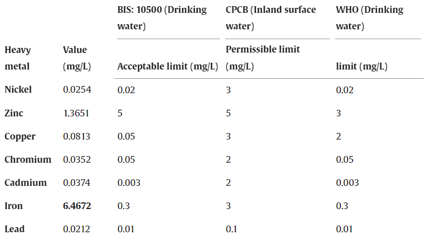

Industrial Heavy Metal Contamination
The catchment area of River Yamuna in Delhi is highly urbanized and is networked with several drains. Najafgarh and Shahdara drains are the major drains that discharge a heavy load of pollutants into the river. Rapid urbanization and population growth results in industrialization pose a major threat of heavy metal pollution for nearby water bodies. The water quality monitoring of River Yamuna has indicated a significant presence of several heavy metals in its water.

Spatial variation of COD of Yamuna River at different location of Delhi Stretch during the sampling period

How does Delhi Contributed to Pollution
Around 90% of wastewater from households pours into the river untreated. This wastewater comprises laundry detergents and other chemicals increasing the phosphate content in the water leading to the formation of froth. The same goes for industrial effluents and sewage that are discharged into the river without being treated. Only 35% out of total estimated sewage discharge undergoes treatment. Other factors like idol immersion also contribute to pollution. The lead, plaster of paris (POP) and chrome paints used in making the idols also pollute the water after they are immersed. Not only this, but all the overlooked things like polythene bags, decoration items, metal polishes etc. are also a contributing factor.
Delhi’s dependence on Yamuna

The Delhi stretch of the Yamuna river is about 22 km starting from Wazirabad barrage to Okhla bayrage (Sharma and Kansal). This stretch alone is responsible for 76% of the rivers' pollution but this stretch is also the main source of raw water for the capital. This roughly accounts for 70% of Delhi's water supply which roughly translates to 57 million people.
The role of ammonia
Recently, ammonia levels in Yamuna have risen. Over the past weekend, the ammonia levels have been fluctuating reaching upto five times above the treatable limit of 0.9ppm.
The Delhi Jal Board (DJB) which is the governing body responsible for water supply in the capital has issued an SOS.
Ammonia levels in water are harmful for the aquatic life as well. It changes the pH of water making it more alkaline. The mysterious death of fishes can also be linked to ammonia

The Yamuna Action Plan
The Yamuna Action Plan (YAP) is a river restoration project introduced in 1993. It is a bilateral project between the government of India and Japan where Japan offered loan assistance for the implementation of YAP. Subsequently, two phases YAP II and YAP III were initiated in 2004 and 2008 respectively. Unfortunately, the mission to clean Ganga and Yamuna which includes YAP has failed according to the Parliamentary Committee on Environment and Forests